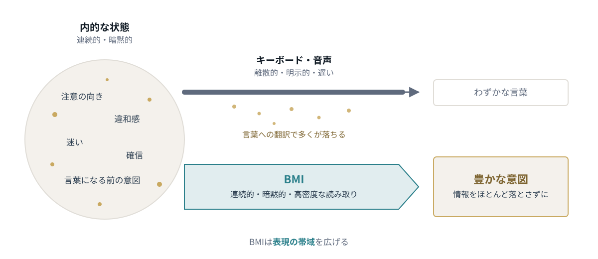
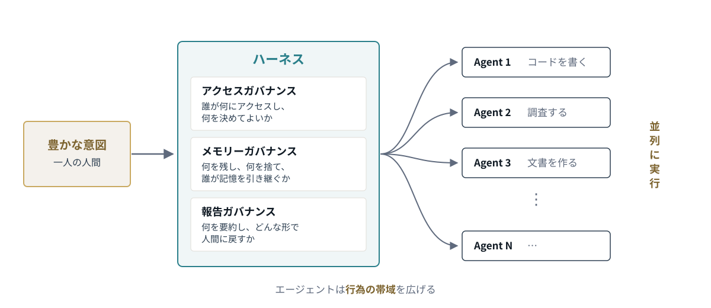
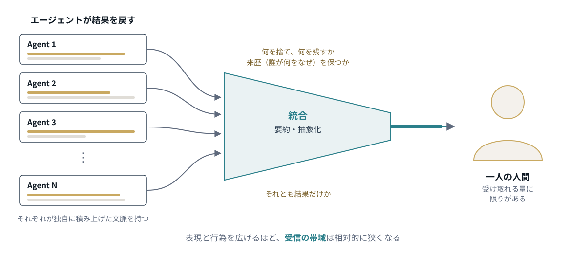
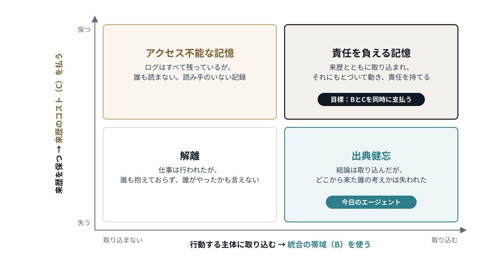
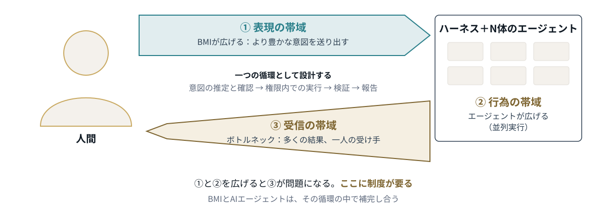

この記事は、noteの記事「BMIとAIエージェントのためのガバナンス」（2026年9月13日）を大幅に拡張したものです。マルチエージェントの記憶と来歴を扱う進行中のプロジェクト Dividual Clones（影分身）にもとづいています。これはベータ版です。議論はまだ発展途上で、本文は今後改訂します。コメントを歓迎します。
はじめに：限界は分身を作ることではない
漫画『NARUTO』の影分身の術は、自分の分身をつくり、それぞれに独立して動かす術だ。分身が解かれると、その分身が経験したことが本体に戻ってくる。ただし、よく知られているように、戻ってくるのは経験だけではない。疲労も戻ってくる。一度に多くの分身を解けば、本体はそれを受け止めきれない。この術の限界は、分身をつくることではなく、分身を受け入れることにある。
これは、人間とAIの協働がこれから向かう姿をよく表している。
人はAIに二つのことを求めている。一つは、自分の中にある情報をもっと豊かに取り出したいということ。もう一つは、自分一人ではこなせない量の仕事を、同時に走らせるということだ。前者を担うデコーディングの技術がブレイン・マシン・インターフェース（BMI）であり、後者を担うのがAIエージェントである。
両者が同じ図の中に描かれることはほとんどない。BMIは神経工学と臨床の文脈で、エージェントはソフトウェア開発とマルチエージェント研究の文脈で、別々に語られてきた。私はBMIだけでは片手落ちで、両者を一緒に設計すべきだと主張している。人間の側から眺めると、両者は同じ問題を逆の向きから解こうとしている。そして両方を進めると、影分身の問題にまっすぐぶつかる。
分身の一生には三つの場面がある。意図を託されて送り出され、自分で動き、そして戻ってくる。場面ごとに帯域の限界があり、場面ごとに必要な統治がある。
送り出す：表現の帯域
人間には帯域の限界がある。キーボードを叩き、声で指示を出すとき、私たちは頭の中にある判断や注意、まだ言葉になっていない意図のごく一部しか外に出せていない。キーボードや音声は離散的で、明示的で、遅い。私たちは伝えたいことを一度言葉に翻訳し、それを打ち込む。そして、翻訳の過程で多くのものが落ちる。
これは入力側の限界、つまり表現の帯域である。

BMIが捉えようとしているのは、その翻訳の手前にある連続的で暗黙的な状態だ。どこに注意が向いているのか、何に違和感を覚えているのか、迷っているのか確信しているのか。BMIの本領は、豊かな意図をできるだけ情報量を落とさずに抽出することにある。
BMIで直接エージェントを操縦する、という構想はありうる。しかしBMIが担うべきは、人間の側の意図を高密度にすること、つまり分身に何を託すかをよく決めることだ。その先の並列化や整理は、別の層が担うことになるはずだ。
動かす：行為の帯域
どれだけ明確な意図を持っていても、人間の身体と時間は一つしかない。同時に十の仕事を進めることはできない。これは出力側の限界、つまり行為の帯域である。
エージェントはこれを広げる。2026年現在、エージェントの能力はすでにほとんどの場合、人の平均的能力を超えていると言って良い。コードを書き、調査をし、文書を作る。一人の人間の意図を受け取って、数十体が同時に別々の仕事を進めることは、技術的にはもう可能だ。

とはいえ、マルチエージェント協調は簡単ではない。人間の組織には、多くの人を一つの目的に向かわせる仕組みがある。就業規則があり、決裁権限があり、記録が残り、報告の線がある。エージェントにも同じものが要る。これはハーネスと呼ばれているものだ。ハーネスには三つの仕組みが必要になると私は考えている。分身の一生の三つの場面に、一つずつ対応する仕組みだ。
一つ目は、動かす場面に属する。
- アクセスガバナンス：誰が何にアクセスし、何を決めてよいのかを定める。
残りの二つは戻り道に属するので、後で導入する。
戻す：受信の帯域
分岐したエージェントは、それぞれ別の文脈を積み上げる。やがて仕事を終え、その経験が人間のもとに戻ってくる。このとき、二つの要請は衝突する。BMIによって意図は豊かになった。豊かな意図は、豊かな結果を生む。エージェントによって処理は並列になった。並列の処理は、多数の結果を生む。そのすべてが、一人の人間の受け取りの帯域に殺到する。

入力側と出力側を広げれば広げるほど、人間の受信の帯域は相対的に狭くなる。これは技術的な不備ではない。人間の行動の情報処理量は毎秒10ビット程度で、感覚が取り込む量（毎秒10億ビット程度）とは桁が違うという推定がある（Zheng & Meister）。この速度が指や声ではなく考えること自体の速さを映しているのなら、脳への管を太くしても、脳が受け取れる量は増えない。第三の帯域は、未熟な技術からではなく、構造から必然的に生じる問題なのだ。
これは最も野心的な未来像でも変わらない。Saturnin Pugnetはマニフェスト『Phase Lock』で、加速した全脳エミュレーション、つまり自分の脳の複製が機械の速さでAIを監督し、本人が追える速さで報告する、という案を示している。これは文字どおりの意味での影分身だ。そしてこの案も、あらゆるエージェントのパイプラインと同じ一歩で終わる。「報告する」だ。この一歩はたいてい一文で済まされる。だが、コストが生じるのはまさにそこだ。
戻すときの二つのコスト
戻り道には、性質の異なる二つのコストがある。
- 統合の帯域（B）：分身が経験したことのうち、行動し判断する主体にどれだけを取り込めるか。人間なら注意と中枢の処理速度で、エージェントなら統合する側のコンテキストの長さで上限が決まる。
- 来歴（C）：それぞれの情報がどこから来たかを保つコスト。どの分身が、どんな指示のもとで、どの情報源から、なぜそうしたのか。その記録を保存し、検証し、読むためのコストである。
この二つは独立していない。来歴そのものも、取り込まなければならない情報だからだ。「誰が何をなぜやったか」という一行一行が、それが説明する結果と同じ細い経路を奪い合う。戻ってきたものを取り込むかどうか、その来歴を保つかどうかで、四つの状態が生まれる（図4）。

- 解離：何も取り込まれず、何も追跡されない。仕事は行われたが、誰もそれを抱えておらず、誰がやったのかも言えない。
- アクセス不能な記憶：ログはすべて残っているが、誰も読まない。記録は完全だが、読み手がいない。
- 出典健忘：結論は取り込まれたが、それがどこから来たかは失われている。自分が何を信じているかはわかるが、なぜなのか、もとは誰の考えだったのかがわからない。
- 責任を負える記憶：結果が取り込まれ、その来歴も保たれている。それにもとづいて行動でき、そのことに責任を持てる。
今日のエージェントの仕組みの多くは、出典健忘の状態にあり、それが機械の速さで回っている。来歴のない要約が届き、私たちはそれにもとづいて動く。目指すべきは責任を負える記憶だが、そこは一番高くつく。BとCを同時に支払わなければならないからだ。
すべての仕事がそこにある必要はない。日常的な調べものは結果だけ戻ってくればよい。だが、後で誰かが説明しなければならない判断はそうはいかない。ここから、ハーネスの二つ目の仕組みが導かれる。
- 報告ガバナンス：仕事の種類ごとに、その戻り道を四つの状態のどこに置くかを意図して選ぶ。何を要約・抽象化し、何を来歴つきで戻し、どんな形で人間に届けるかを定める。
レイヤー1とレイヤー2：値段のついたトレードオフ
ブロックチェーンは、すでにこの問題に突き当たり、しかもそれに値段をつけている。
ブロックチェーンの本体であるレイヤー1は、この話でいう一人の本体だ。ブロックの容量は希少で、正式に記録されるものはすべてそこに戻らなければならない。これが統合の帯域にあたる。より多くを処理するために、レイヤー2のロールアップは本体の外で取引を処理し、その結果をレイヤー1に書き戻す。分身が働いているのと同じだ。誰でもその結果を検証し異議を申し立てられるように、ロールアップは元のデータも公開しなければならない。このデータ可用性が、ロールアップの主な運用コストになっている。値段のついた来歴である。
四つの状態には、それぞれ対応するものがある。
- 解離：チェーンの外で行われ、本体に決済されない活動。本体から見れば、なかったことになる。
- 出典健忘：結果の状態だけを本体に載せ、データは別の場所に置く設計（validium型や多くのサイドチェーン）。本体は運営者の言葉を信じて結果を受け入れることになる。
- アクセス不能な記憶：データは公開されているが、誰も見張っていないロールアップ。optimistic rollup は、少なくとも一人の誠実な者が読んでいて、異議を申し立てる用意があるときにだけ安全だ。読み手のいない完全な記録は、誰も守らない。
- 責任を負える記憶：データがレイヤー1にあり、結果が実際に検証されているロールアップ。
ロールアップは、戻り道の二つの戦略も示している。どちらも人間とエージェントの関係に置き換えられる。optimistic rollup は、結果を既定で受け入れ、一定期間（典型的には7日ほど）は異議を受け付ける。エージェントの要約を受け入れつつ、決まった期間は監査する権利を残すのと同じだ。validity rollup（ゼロ知識証明を使うもの）は、結果に証明を添えるので、本体は履歴をまったく読まずに結果を確かめられる。この証明は、BとCのあいだのどこかを選ぶだけではない。責任を確かめるコストそのものを下げ、トレードオフの境界を動かす。
ここから引き出せる教訓が二つある。一つ目に、多くのロールアップは今も、すべての取引の順番を決める一つのシーケンサーに頼っている。分身は多いが、戻ってくる順番を決める者は一人だ。これは、エージェントを取りまとめるオーケストレーターが抱える集中のリスクと同じである。二つ目に、この類比は一番大事なところで崩れる。ブロックチェーンは決定的な状態遷移を機械的に検証できる。しかし人間は証明を直感で確かめられないし、エージェントの仕事は意味や判断を含み、証明に圧縮できない。人間の側の戻り道には、暗号だけでなく制度が必要になる。
分身が持ち帰るものを決済する：五つの設計
ロールアップを通して見ると、Pugnetの案は二者ではなく三者からなる。AIエージェントが分身として機械の速さで実行する。本人はレイヤー1として、結果が最終的に確定する場所になる。その間に、分身が持ち帰るものを束ね、検証し、本人に渡す決済の仕組み、つまりハーネスがある。Pugnetの加速したエミュレーションは、この真ん中の層の作り方の一つだ。統治の層そのものに、自分の分身を置く設計である。監査AI、ルールエンジン、検証器なども、同じ場所に入りうる。何で満たすにせよ、「本人のペースで」という一本の矢印の中には、設計の選択肢がまるごと隠れている。ロールアップからは、五つの設計が引き出せる（図5）。

- Validium型：結論だけが戻り、ログは仕組みの中に留まる。出典健忘の状態であり、本人は真ん中の層を運営する者を信じるしかない。
- Optimistic型：要約が戻り、全ログは記録庫に送られる。異議申し立ての期間内であれば、本人や監査役が反証できる。見張る者がいれば責任を負える記憶になり、いなければアクセス不能な記憶になる。
- Validity型：結果に、定められた制約を満たしたことの証明が添えられて戻る。責任を確かめるコストは安くなるが、証明できるほど厳密に書ける性質に限られる。
- 委員会型：複数の監督者が互いを検証する。委員会の多様性は、メンバーの多様性を超えない。同じ源から来た監督者、たとえば同じ人の複製や同じモデルのインスタンスは、同じ死角を共有する。そして全員が見逃すものこそ、監督される側のエージェントが身につけていく振る舞いになる。多様性は設計して持ち込まなければならない。異なる人、異なるモデル、異なる時点の同じ人である。
- Based型：本人が先に意図と仕事の順番を決め、仕組みはそれを執行するだけになる。来歴は本人の意図から導かれる。BMIが意図を高密度に取り出せるなら、ここで効いてくる。代わりに、予期しない事態への対応の余地は小さくなる。
五つの設計すべてにまたがる問いが三つある。
- ファイナリティと不可逆性。 ロールアップのシーケンサーが出すのは仮の確定で、レイヤー1で最終的に確定する。不正が証明されれば、誤った結果は巻き戻せる。しかし現実世界での行為は巻き戻せない。Optimistic型は取り消せる行為に向き、取り消せない行為には、Validity型の検証か事前の承認が必要になる。
- 逆向きのブリッジ。 ロールアップの状態は、レイヤー1に載った入力から導かれる。監督者も同じで、とりわけ自分の複製は、本人の現在の意図から定期的に導き直されなければ、本人から離れていく。報告は上へ流れ、更新は下へ流れなければならない。
- 非常口。 ロールアップには、シーケンサーに拒まれても、利用者がレイヤー1を通じて抜け出せる仕組みがある。本人にも、決済の仕組みを迂回して分身を直接止められる経路が要る。Shavitらの言う中断可能性である。
真ん中の層に自分の複製を置くと、分身は二種類になる。実行する分身と、監督する分身だ。後者は「誰の分身なのか」という問いを最も鋭い形で抱えることになる。この問いには、後の節で戻る。
統治された忘却
すべてを残し、すべてを読む余裕がないなら、何かを手放さなければならない。問題は、それが偶然に起きるのか、決定として行われるのかだ。
公文書館学は、この問題に長く取り組んできた。アーキビストは記録が作られたときに評価選別を行い、何を残す価値があるかを決める。記録の種類ごとにどれだけ保存するかを定めた保存スケジュールを設け、期限が来たら計画的な廃棄を行う。忘却は、身に降りかかる失敗ではなく、誰かが責任を持つ行為になる。
これをマルチエージェントの仕組みに持ち込むと、BとCのあいだの一点を選ぶ以上のことが起きる。決まった時期に廃棄される記録は、今すぐ読まなくてよい。残るものは読める量に収まる。意図して行う廃棄こそが、来歴を支払い可能なものに保つ。
ここでもロールアップが実例になる。イーサリアムのEIP-4844以降、ロールアップのデータは「blob」で運ばれ、ノードはそれを4,096エポック（約18日）保持したあと削除する。7日の異議申し立て期間を十分に覆う長さだ。記録が必要になりうる期間に結びつけた保存スケジュールと、その後の計画的な廃棄である。チェーンは、意図して忘れるからこそ、軽く保たれる。
ここから、ハーネスの三つ目の仕組みが導かれる。
- メモリーガバナンス：何を残し、何をいつ捨て、誰がその記憶を引き継ぐのかを定める。
誰の分身なのか
もう一つの層がある。日本語の「分身」と、平野啓一郎の言う「分人」（人は関係ごとに異なる複数の自分を生きている、という考え）は、「分」の一字を共有している。人類学にも、マリリン・ストラザーンの「分人（dividual）」という、ひとつの身体に閉じず関係からなる人格の考え方がある。
分身が、一人が持つ道具ではなく自己の一部なのだとすれば、来歴の意味が変わる。来歴は外部の帳簿ではなく、自己を保つための維持費になる。自分のどの分身が何をもとにこれをやったのかを知ることは、自分が何をしたのかを知ることの一部だからだ。そのとき責任は、頂点にいる一人だけでなく、それぞれの分身から本人へとつながる線そのものに宿る。
LLMエージェントについては、これは比喩に聞こえるかもしれない。だがPugnetが描く脳のエミュレーションについては、比喩ではない。機械の監督に主観的に千時間を費やした自分のエミュレーションは、自分のものなのに自分が生きていない経験を持って戻ってくる。そのうちどれだけを取り込み、その来歴をどれだけ保つかが、その後の自分がどんな人間になるかを決める。
戻り道のプライバシー
ここまで来歴は、記録を保存し、検証し、読むためのコストとして扱ってきた。BMIが関わると、そこに四つ目の要素が加わる。露出だ。
意図が脳から読み取られるとき、「この分身はどの指示にもとづいて動いたのか」という問いは、誰かの心を読み取った記録へとさかのぼる。来歴を厚く残すほど、戻り道は説明可能になり、同時に漏れうるものも増える。目指すべき「責任を負える記憶」は、失うものが一番大きい隅でもある。来歴には、統合と保存に加えて三つ目の次元が要る。誰がそれを見てよいかだ。
ここまでの議論のいくつかは、プライバシーの手立てでもあることがわかる。
- 分業はプライバシーの境界になる。 BMIの層が生の信号ではなく意図だけを渡すなら、分身への指示を高密度に保つ境界が、生の心を手元に留める境界にもなる。Pugnetも同じ提案をしている。処理は端末内で行い、脳波ではなく意図を送るべきだ、と。
- 帯域のための忘却と、プライバシーのための忘却は一致する。 神経の記録は、読み取りのモデルが進むほど多くを語るようになる。今日は集中度しかわからない記録が、将来のモデルにはずっと多くを明かすかもしれない。Pugnetの答えは、更新しなければ期限が切れる同意だ。保存スケジュールは、それと同じ道具である。廃棄された記録は、明日のモデルに読み直されない。
- アクセス不能な記憶は、プライバシーにとって最悪の隅だ。 誰も読まないログも存在はしている。漏洩しうるし、提出を求められうるし、再解析されうる。露出のコストをすべて負い、理解の利益は何も得ない。
- 見せずに証明する。 validity proof は履歴を読まずに結果を確かめることを可能にし、ゼロ知識証明はデータを見ることすらなくそれを可能にする。同じやり方で、分身は何を見たかを明かさずに、権限の範囲内で動いたことだけを示せるかもしれない。一つの道具が、帯域とプライバシーを同時に扱う。ただし、先ほどと同じく、証明できるほど厳密に書けることに限られる。
あえて統合しない、という選択もありうる。ヘレン・ニッセンバウムの「文脈的完全性」は、ある文脈では適切な情報も、別の文脈に流れれば侵害になると考える。アクセスガバナンスは、その考え方を分身に当てはめたものだ。分人の見方を重ねれば、人は関係ごとに異なる人格を生きている。別々の関係の中で動く分身は、一つの自己にすべて統合すべきではない文脈を抱えている。分身の記憶にとって正しい状態が、封をしたまま、その文脈の中に、意図して統合せずに残しておくことである場合もある。意図して選ばれ統治された「アクセス不能な記憶」は、区画化になる。
一人から一つの場所へ：ローカルAI
この枠組みは規模を広げても成り立つ。一人の人間を一つの地域に、分身をローカルAIに置き換えれば、影分身の問題は場所の規模で再び現れる。
ある地域が、自らの環境が語ることを集めるとしよう。水や土の環境DNA、木につけたセンサー、農家や自治体の記録を、地域で動くAIに集め、そこで得たことを住民に還元する。そうした地域が数多くあり、それぞれのローカルAIがネットワークでつながるとする。それぞれのローカルAIは、分身と同じように独自の文脈を積み上げる。それらをつなぐことは、戻すことだ。各地域が学んだことが、レイヤー1のように容量に限りのある共有の層へと流れ込む。何を上げ、どれだけの来歴をつけるかが、設計の中心になる。
ここでの来歴は、説明責任のためだけのものではない。価値が地域に戻るための道筋でもある。地域に利益を還元するには、どのデータがどこから、誰の土地から来たのか、どの知識が誰から来たのかがわかっていなければならない。この規模での出典健忘には、聞き慣れた名前がある。搾取だ。データが中心に流れ、出所が失われ、そこから生まれた価値は戻ってこない。これはまさに、生物多様性条約のもとで続いている、デジタル配列情報（DSI）をめぐる議論の背後にある問題である。出所から切り離された遺伝情報は、戻る道のないまま価値を生みうる。環境DNAは、この問題のただ中にある。
データの種類ごとに、四つの状態のどこに置くかを意図して決められる。
- センサーの生の記録や配列の読み取りデータは、集めた場所に、保存スケジュールのもとで置く。量が多く、神経の記録と同じように、将来のモデルに誰も意図しなかったことまで明かしうる。
- どの種がいるかといった要約は、来歴を保ったままネットワークに統合する。地域どうしの比較を可能にし、価値を還元する根拠になる。
- 希少種の生息地の位置は、意図して区画化する。ネットワークに載せないこと自体が保全になる。その情報は密猟者の役にも立つからだ。
- 地域の知識や伝統知は、明示的な同意と利益配分の条件がある場合に限って統合し、それが誰の知識なのかが失われないようにする。
ハーネスの残りの仕組みも、そのまま当てはまる。アクセスガバナンスは、外部のエージェントがローカルAIの道具やデータに触れる入口に置かれる。たとえば Model Context Protocol（MCP）、つまりAIアプリケーションを外部の道具やデータにつなぐためのオープンな標準を通じて公開するサーバーであり、そこで呼び出す側ごとに何を読み、何を決めてよいかの範囲を設定できる。報告ガバナンスは、外からの問いに対して地域が何を、どんな形で返すかを定める。そしてロールアップからの警告もそのまま当てはまる。一つの拠点がすべての地域から送られるものの順番を決め、集約するなら、そこが権力と攻撃の集まる場所になる。ローカルAIのネットワークが分散させておくべきなのは、能力だけでなく、それぞれの場所の判断の独立性である。
先行研究との関係
この議論のそれぞれの部分には、先行する議論がある。新しいのは、それらを一つの図の中に置いたことだ。
- 帯域とBMI。 イーロン・マスクは以前から、人間の出力の帯域はあまりに低く、BMIこそ人間とAIの共生への道だと主張してきた。Pugnetの『Phase Lock』はそれをより体系的に展開し、本当の制約は通信ではなく理解力かもしれないことも明示的に認めている。そのうえでPugnetが示す答えは、神経の拡張と全脳エミュレーションによって認知そのものを広げることだ。本稿は診断には同意するが、処方には同意しない。自分の複製でさえ、戻ってこなければならないからだ。
- 中枢のボトルネック。 Zheng & Meister は、人間の行動の情報処理量を毎秒10ビット程度と見積もっている。ハーバート・サイモンは1971年に、その制度版にあたる指摘をしている。情報の豊かさは注意の貧困を生み、組織はその希少性を前提に設計されなければならない。
- BMIとエージェントの組み合わせ。 Meunier ら（2024）は、利用者が脳波から高レベルの意図を出し、AIエージェントが細部を埋める「Brain-Artificial Intelligence Interface」を提案している。Chen らは、ブレイン・コンピュータ・インターフェースから、意図の確認、利用者の主体性、ガバナンスを組み込んだ「Brain-Agent Collaboration」への転換を呼びかけている。どちらも本稿の分業（意図はBMI、残りはエージェント）と一致するが、戻り道の手前で止まっている。
- エージェントにとってのボトルネックとしての注意。 多数のコーディングエージェントを動かす実務家たちも、逆の側から同じ限界を報告している。制約はエージェントではなく、開発者の注意だという。たとえば Zack Proser の講演「Your attention is the bottleneck, not your agents」（AI Engineer Europe 2026）がある。
- エージェントの統治。 OpenAI の「Practices for Governing Agentic AI Systems」（Shavit ら, 2023）は、行動範囲の制限と承認の要求、エージェントの活動の可読性、自動監視、帰属可能性、中断可能性を提案している。これらはアクセスガバナンスと、戻り道の来歴の側に対応する。それらが生み出す記録を読むコストを論じた点が、本稿の付け加えたものだ。
- ブロックチェーンのスケーリング。 レイヤー2のロールアップ、データ可用性、EIP-4844 で削除される blob は、B–Cトレードオフに対する、現存する最も具体的な値段である。本稿の類比はその工学の蓄積を借りたもので、それについて新しい主張をしているわけではない。
- プライバシー。 ヘレン・ニッセンバウムの文脈的完全性は、プライバシーを秘密ではなく適切な情報の流れとして捉える。ニューロライツは法制度に入り始めている。チリは2021年に憲法に書き込み、ユネスコは2025年に神経技術の倫理に関する勧告を採択した。Pugnetの『Phase Lock』は、端末内での処理、生の信号ではなく意図を送ること、更新しなければ期限が切れる同意を提案している。
- 場所から生まれるデータ。 名古屋議定書は遺伝資源へのアクセスと利益配分を定め、2024年の国連生物多様性条約締約国会議（COP16）は、デジタル配列情報から生じる利益のための基金を設けた。先住民のデータ統治に関する CARE 原則（集団的利益、管理する権限、責任、倫理）は、地域のデータが出所に対して説明責任を保つための条件を示している。連合学習は、生データを一か所に集めずに場所をまたいで学習する技術的な道筋を示している。
- 来歴と記憶。 データの来歴には W3C PROV のような標準がある。心理学では、ソースモニタリング研究（Johnson, Hashtroudi & Lindsay, 1993）が、人が記憶の出所を見失う仕組み、つまり人間における出典健忘を調べている。交換記憶（Wegner）と組織記憶（Walsh & Ungson, 1991）は、集団が知識をメンバーのあいだに蓄える仕組みを記述している。評価選別と保存スケジュールは公文書館学に由来する。コンウェイの法則（1968）、つまりシステムはそれを作る組織のコミュニケーション構造を写すという法則は、分身のあいだに統合の帯域をどう配分するかが、統合された自己の姿を形づくることを示唆する。
まとめ
人はAIに二つのことを求めている。取り出すことと、動かすことだ。BMIは表現の帯域を広げ、エージェントは行為の帯域を広げる。両方を広げたとき、受信の帯域が問題になる。これが影分身問題である。

速い接続でも、速い脳でも、この問題は消えない。自分を複製すれば、問題は増える。分身が増え、戻ってくる経験が増えるのに、戻る先は一つのままだ。受け取る側が一人の人間ではなく一つの場所であっても、同じことが言える。
だから戻り道は、前提にするのではなく設計しなければならない。ハーネスは、分身の一生の場面ごとに一つずつ仕組みを与える。動かす場面にはアクセスガバナンス、何をどう戻すかを選ぶ報告ガバナンス、そして何を残し、何を手放し、誰がそれを見てよいかを定めるメモリーガバナンスだ。
重要なのは、意図の推定と確認、権限の範囲内での実行、成果の検証、そして人間への報告を、一つの循環として設計することだ。BMIとAIエージェントは、その循環の中で補完し合う可能性がある。戻ってくるものに、私たちが責任を持つかぎりにおいて。